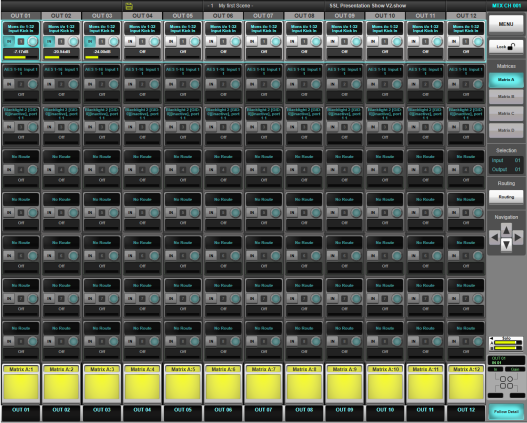
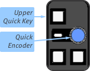

Matrix
SSL Live has four matrices. These allow you to reduce the number of crosspoints you can see to those you are likely to use, focusing in on relevant parts of the 'full matrix' rather than having to sift through a large page of mostly redundant controls.
Matrix channels provide basic control of the matrix outputs before they reach the outside world.
The basic configuration of the four matrices is defined in the Console Configuration page (MENU > Setup > Console Configuration).
If you haven't already configured the size your matrices, please refer to Console Configuration.
Access the matrices from the main screen menu (MENU > Matrix).
To choose which matrix is displayed, press the Matrix A, Matrix B, Matrix C or Matrix D button on the right edge of the screen.
That matrix will appear in the main part of the screen, with each row referring to an input, and each column referring to an output:

If the matrix is too large to display all of its crosspoints in the screen simultaneously, use the Navigation cursor keys in the right side of the screen to scroll the display up and down, or left and right.
Input Routing
To route a signal to a matrix input:
Select the row whose input you wish to route by touching it. Tap the Routing button; a standard Routing dialogue will appear.
Note: Matrix routing is always done on a mono basis. Multichannel signals must be routed as separate mono signals.The selected input will appear in the text box above the controls for each output column in the selected row.
Note: For more details about using a Routing display, see Routing. Note: Output routing is performed from the Matrix Output channel, as described below.Output Activation and Level Control
If the Lock button (top right) is inactive, you can activate each crosspoint by touching its In button in the Main Screen display; you can then drag the adjacent Gain encoder up and right to increase the output level. To enter a specific value, double-tap on the gain value to activate the on-screen keyboard.
If the Lock button is active, the crosspoints within the matrix cannot be altered using the screen:
Touch the crosspoint row you wish to alter so that it is highlighted;
Crosspoint controls for that row will now be assigned to the Quick Controls immediately below the screen: press the upper Quick Key to switch the crosspoint in, and turn the Quick Encoder to adjust the gain.

Note: This Quick Control operation requires Follow Detail mode to be active. Touch the Follow Detail button (bottom right corner of the Main Screen) to toggle between Follow Channel (button inactive) and Follow Detail (button active).Matrix Output Routing
Matrix path faders allow for master level control before audio leaves the console. Matrix paths have all full path processing (EQ, Filters, Delay etc.) except dynamics, plus access to Eyeconix, naming, inserts, and output routing.
Matrix outputs are routed using the standard routing display accessed via Route Output in the Input/Routing Detail View dialogue. Access this page by double-tapping on the top of the Matrix Channel strip in the Channel View.
Note: Matrix routing is always done on a mono basis.Useful Links
RoutingIndex and Glossary